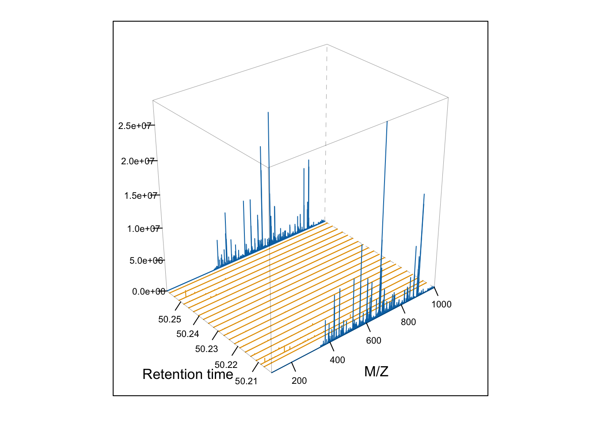

4 R for Mass Spectrometry
4.1 Introductie
Massa spectrometrie is een technologie die ionen scheidt op basis van hun massa/lading ration (M/Z). In deze opdracht ga ik kijken naar de massa spectrometrie data van PXD008990. Deze studie kijkt naar leeftijdsgerelateerde glycomische en proteomische veranderingen in het nigrostriatal pathway van het brein. Bij Parkinson’s disease (PD) is er sprake van een progressieve degeneratie van dopaminerge neuronen in de nigrostriatal pathway. Gen therapie heeft potentie om deze degeneratie te vertragen of stoppen, adeno-associated virussen (AAV) zijn een voorbeeld van gen therapie. AAV receptoren zijn glycanen, in deze studie wordt er gefocussed op de receptor voor rAAV2 (heparansulfaat proteoglycaan), rAAV9 (N-glycanen met terminale galactose) en proteomics voor receptoren en co-receptoren van adeno-geassocieerd virus in het nigro-striatale gebied van de hersenen.
4.3 Uitvoering met voorbeeld data PXDOOOOO1
4.3.1 Inlezen van de data in R
#Inlezen van PXD008990 in R
px_vb <- PXDataset("PXD000001")
#Metadata bekijken van PXD008990
pxtax(px_vb) #Taxonomie van het dier ## [1] "Erwinia carotovora"## [1] "ftp://ftp.pride.ebi.ac.uk/pride/data/archive/2012/03/PXD000001/generated"## [1] "Gatto L, Christoforou A; Using R and Bioconductor for proteomics data analysis., Biochim Biophys Acta, 2013 May 18, doi:10.1016/j.bbapap.2013.04.032 PMID:23692960"4.3.2 Ruwe data visualisatie, verwerking en manipulatie
sp_vb <- Spectra(mzf)
#Weergeef alle metadata variabelen
spectraVariables(sp_vb)
#Extract alle metadata
spectraData(sp_vb)
#Extract een lijst met de ruwe data
peaksData(sp_vb)
#Check het aantal spectra in het spectra object -> dit is 7534 scans
length(sp_vb)
#Maak een nieuw kolom aan met de retentie tijden in minuten
sp_vb$rtime_minute <- rtime(sp_vb) / 60 with(spectraData(filterMsLevel(sp_vb, 1)),
plot(rtime, totIonCurrent, type = "l"))
abline(v = rtime(sp_vb)[2807], col = "red") 
#Verkrijg een parent set (MS1) en children (MS2) scans
ms_2_vb <- filterPrecursorScan(sp_vb, 2807)
#Plot het 2807 spectrum en highlight alle pieken die voor MS2 analyse geselecteerd zijn
plotSpectra(sp_vb[2807], xlim = c(400, 1000))
abline(v = precursorMz(ms_2_vb)[-1], col = "grey")
abline(v = precursorMz(ms_2_vb)[2], col = "red")
#Zoom in op mz values 521.1 en 522.5 om de isotope envelop van de pieken te weergeven
plotSpectra(sp_vb[2807], xlim = c(521.2, 522.5), type = "l")
abline(v = precursorMz(ms_2_vb)[2], col = "red")

## [1] 37i <- which(precursorMz(sp2_vb) == precursorMz(sp2_vb)[37])
sp2_vbi <- sp2_vb[i]
#Visualiseer het matchende paar
plotSpectraOverlay(sp2_vbi, col = c("red", "steelblue"))

4.3.3 Identification data
## [1] "TMT_Erwinia_1uLSike_Top10HCD_isol2_45stepped_60min_01-20141210.mzid"#Het onderstaande tabel geeft het aantal spectra aan die 1, 2, 3, 4 of 5 matches hebben.
table(table(id$spectrumID))##
## 1 2 3 4 5
## 4936 369 26 10 2#Om te zien hoeveel matches scan 1774 heeft:
i <- which(id$spectrumID == "controllerType=0 controllerNumber=1 scan=1774")
data.frame(id[i, ])[1:5]## sequence spectrumID chargeState rank
## 1 RTRYQAEVR controllerType=0 controllerNumber=1 scan=1774 2 1
## 2 RTRYQAEVR controllerType=0 controllerNumber=1 scan=1774 2 1
## 3 RTRYQAEVR controllerType=0 controllerNumber=1 scan=1774 2 1
## 4 RTRYQAEVR controllerType=0 controllerNumber=1 scan=1774 2 1
## passThreshold
## 1 TRUE
## 2 TRUE
## 3 TRUE
## 4 TRUE#Reducing het PSM object met variabele sprectrumID
id2 <- reducePSMs(id, id$spectrumID)
j <- which(id2$spectrumID == "controllerType=0 controllerNumber=1 scan=1774")#Zet de dataframe om naar een tibble
id_tbl <- tidyr::as_tibble(id)
#Verwijder decoy hits
id_tbl <- id_tbl %>%
filter(!isDecoy)
#Houd de first rank matches
id_tbl <- id_tbl %>%
filter(rank == 1)
#Verwijder de gedeelde peptides
mltm <-
id_tbl %>%
group_by(spectrumID) %>%
mutate(nProts = length(unique(DatabaseAccess))) %>%
filter(nProts > 1) %>%
select(spectrumID, nProts)
id_tbl <-
id_tbl %>%
filter(!spectrumID %in% mltm$spectrumID)
#Je kan ook je data filteren met filterPMS(), beide geven een output van 2666 PSMs
id_filtered <- filterPSMs(id)
#describePeptides geeft het aantal unieke of gedeelde peptides
describePeptides(id_filtered) #Zou alleen unieke hits moeten geven aangezien de gedeelde eruit zijn gefilterd
#describeProteins geeft het aantal eiwitten/proteins gedefinieerd door alleen unieke, alleen gedeelde of een mix van beide.
describeProteins(id_filtered)
#Vergelijk de distributie van ruwe identificatie scores van de decoy en de niet-decoy hits
as_tibble(id) %>%
ggplot(aes(x = MS.GF.RawScore,
colour = isDecoy)) +
geom_density()
#Bereken de lengte van elke peptide en het aantal peptides per eiwit en plot de lengte van de peptide tegen hun respectieve aantal peptides
suppressPackageStartupMessages(library("dplyr"))
iddf <- as_tibble(id_filtered) %>%
mutate(peplen = nchar(sequence))
npeps <- iddf %>%
group_by(DatabaseAccess) %>%
tally
iddf <- full_join(iddf, npeps)
## Joining with `by = join_by(DatabaseAccess)`
library("ggplot2")
ggplot(iddf, aes(x = n, y = DBseqLength)) + geom_point()
Combineren van identification data met de ruw data
##
## 1 2 3 4
## 2630 13 2 1## controllerType=0 controllerNumber=1 scan=5490
## 1903#Filter dit spectrum uit de data en maak een dataframe ervan
id_4 <- id_filtered[id_filtered$spectrumID == "controllerType=0 controllerNumber=1 scan=5490", ] %>%
as.data.frame()
#De vier PSM verschillen in locatie van de Carbamidomethyl modificatie, dit kan je zien in de dataframe of selecteren met:
id_4[, c("modName", "modLocation")]## modName modLocation
## 1 Carbamidomethyl 2
## 2 Carbamidomethyl 5
## 3 Carbamidomethyl 10
## 4 Carbamidomethyl 15#De PMS table reduceren om alleen een-op-een matches tussen ruwe spectra en PSMs te krijgen
id_filtered <- reducePSMs(id_filtered, id_filtered$spectrumID)
#Dan kan je het spectra object en de PSM table samenvoegen
sp_vb <- joinSpectraData(sp_vb, id_filtered,
by.x = "spectrumId",
by.y = "spectrumID")
#Na gaan of er geen identificatie data is toegevoegd aan de MS1 scans
all(is.na(filterMsLevel(sp_vb, 1)$sequence))## [1] TRUE#Na gaan of het wel is toegevoegd aan de MS2 scans
sp2_vb <- filterMsLevel(sp_vb, 2)
table(is.na(sp2_vb$sequence))##
## FALSE TRUE
## 2646 3457#Vergelijk de precursor/ peptide mass to charges
sp2_vb <- sp2_vb[!is.na(sp2_vb$sequence)]
summary(sp2_vb$precursorMz - sp2_vb$experimentalMassToCharge)## Min. 1st Qu. Median Mean 3rd Qu. Max.
## 0.0000 0.0000 0.0000 0.0053 0.0000 2.0297#Tel het aantal identificaties voor elke scan
sp_vb <- countIdentifications(sp_vb)
#Toon het aantal PSMs per scan.
table(msLevel(sp_vb), sp_vb$countIdentifications)##
## 0 1 2 3 4 5 6 7 8 9 10
## 1 833 30 45 97 139 132 92 42 17 3 1
## 2 3457 2646 0 0 0 0 0 0 0 0 0#Visualisatie van de data in de total ion chromatogram
sp_vb |>
filterMsLevel(1) |>
spectraData() |>
as_tibble() |>
ggplot(aes(x = rtime,
y = totIonCurrent)) +
geom_line(alpha = 0.25) +
geom_point(aes(colour = ifelse(countIdentifications == 0,
NA, countIdentifications)),
size = 0.75,
alpha = 0.5) +
labs(colour = "Number of ids")
#Kies een MS2 Spectrum met een hoge identificatie score en plot het
i <- which(sp_vb$MS.GF.RawScore > 100)[1]
plotSpectra(sp_vb[i])
#Gebruik de addFragments() functie om de pieken te annoteren
plotSpectra(sp_vb[i], labels = addFragments,
labelPos = 3, labelCol = "steelblue")
## [1] "THSQEEMQHMQR"## mz ion type pos z seq
## 1 102.0550 b1 b 1 1 T
## 2 239.1139 b2 b 2 1 TH
## 3 326.1459 b3 b 3 1 THS
## 4 454.2045 b4 b 4 1 THSQ
## 5 583.2471 b5 b 5 1 THSQE
## 6 712.2897 b6 b 6 1 THSQEE
## 7 843.3301 b7 b 7 1 THSQEEM
## 8 971.3887 b8 b 8 1 THSQEEMQ
## 9 1108.4476 b9 b 9 1 THSQEEMQH
## 10 1239.4881 b10 b 10 1 THSQEEMQHMComparing Spectra
# Maak een new object met de MS2 spectra met sequenties "SQILQQAGTSVLSQANQVPQTVLSLLR" en "TKGLNVMQNLLTAHPDVQAVFAQNDEMALGALR"
k <- which(sp_vb$sequence %in% c("SQILQQAGTSVLSQANQVPQTVLSLLR", "TKGLNVMQNLLTAHPDVQAVFAQNDEMALGALR"))
sp_k <- sp_vb[k]
sp_k## MSn data (Spectra) with 5 spectra in a MsBackendMzR backend:
## msLevel rtime scanIndex
## <integer> <numeric> <integer>
## 1 2 2687.42 5230
## 2 2 2688.88 5235
## 3 2 2748.75 5397
## 4 2 2765.26 5442
## 5 2 2768.17 5449
## ... 69 more variables/columns.
##
## file(s):
## 16a7c6761dc79_TMT_Erwinia_1uLSike_Top10HCD_isol2_45stepped_60min_01-20141210.mzML# Bereken de 5 bij 5 gelijkenismatrix tussen alle spectra met behulp van compare spectra
mat <- compareSpectra(sp_k)
rownames(mat) <- colnames(mat) <- strtrim(sp_k$sequence, 2)
# Maak een heatmap van de bovenstaande resultaten
pheatmap::pheatmap(mat)
# Vergelijk de spectra met plotting functies
filterIntensity(sp_k, 1e3) %>% plotSpectra(main = sp_k$sequence)
par(mfrow = c(3, 1))
plotSpectraMirror(sp_k[1], sp_k[2], main = "TK...")
plotSpectraMirror(sp_k[3], sp_k[4], main = "SQ...")
plotSpectraMirror(sp_k[3], sp_k[4], main = "SQ...")
4.3.4 MSnbase package
# Inlezen van de data
ms <- openMSfile(mzf)
hd <- header(ms)
# Spectra tussen 30 en 35 minuten retentietijd selecteren
ms1 <- which(hd$msLevel == 1)
rtsel <- hd$retentionTime[ms1] / 60 > 30 &
hd$retentionTime[ms1] / 60 < 35
# De map
M <- MSmap(ms, ms1[rtsel], 521, 523, .005, hd, zeroIsNA = TRUE)
plot(M, aspect = 1, allTicks = FALSE)

4.4 Uitvoering met MS data PXD008990
4.4.1 Inlezen van de data in R
#Inlezen van PXD008990 in R
px <- PXDataset("PXD008990")
#Bekijken van alle bestanden die horen bij PXD008990
pxfiles(px)
#Metadata bekijken van PXD008990
pxtax(px) #Taxonomie van het dier ## [1] "Rattus norvegicus (rat)"## [1] "ftp://ftp.pride.ebi.ac.uk/pride/data/archive/2018/06/PXD008990"## [1] "Raghunathan R, Polinski NK, Klein JA, Hogan JD, Shao C, Khatri K, Leon D, McComb ME, Manfredsson FP, Sortwell CE, Zaia J. Glycomic and Proteomic Changes in Aging Brain Nigrostriatal Pathway. Mol Cell Proteomics. 2018 17(9):1778-1787 doi:10.1074/mcp.ra118.000680 PMID:29915149"4.4.2 Ruwe data visualisatie, verwerking en manipulatie
Spectra
Spectra objecten zijn lijsten van individuele sprectra, elk spectrum is geassocieerd met een set van variabelen (bijvoorbeeld MS level en retentietijd).
De core variabelen van spectra objecten zijn:
spectra <- Spectra(Rat_25.mzML)
#Weergeef alle metadata variabelen
spectraVariables(spectra)
#Extract alle metadata
spectraData(spectra)
#Extract een lijst met de ruwe data
peaksData(spectra)
#Check het aantal spectra in het spectra object
length(spectra)
#Maak een nieuw kolom aan met de retentie tijden in minuten
spectra$rtime_minute <- rtime(spectra) / 60
spectra$rtime_minute %>% head()
#Kijken hoeveel MS levels er zijn
unique(spectra$msLevel)
#Verkrijg de index van het MS2 spectrum met de hoogste base peak intensity
ms2_bpi <- filterMsLevel(spectra, 2)
ms2_bpi_max <- which.max(ms2_bpi$basePeakIntensity)
max_scanIndex <- ms2_bpi$scanIndex[ms2_bpi_max]
max_scanIndexDe spectra data is opgeslagen in object spectra, een spectra object bevat MS data over de mass peak data en de metadata van een individueel spectrum. Met spectraVariables kan je checken welke variabelen er allemaal aanwezig zijn in jouw spectra object. Met spectraData kan je alle een lijst verkrijgen met alle metadata en met peaksData kan je een lijst verkrijgen met de ruwe data. Om het aantal spectra in een object te weergeven kan je length gebruiken, in dit geval zijn er 37016 spectra. Om bijvoorbeeld na te gaan hoeveel MS levels er zijn kan je gebruik maken van unique(spectra$msLevel), voor deze data zijn er twee MS levels; MS1 en MS2. Als je de index van het MS2 spectrum met de hoogste base peak intensity wilt verkrijgen moet je eerst filteren voor MS level 2 met filterMsLevel, dan de max bepalen met which.max en dan de scanIndex van de maximale base peak intensity afleiden. De scanIndex van het MS2 spectrum met de hoogste base peak intensity is in dit geval 10222.
Backends
Backends maken het mogelijk om verschillende backends te gebruiken om massa spectrometrie data in op te slaan, terwijl het via de Spectra-klasse een uniform interface biedt om die gegevens te gebruiken.
Verschillende backends:
- MsBackendMzR: deze backend bewaard alleen algemene spectra variabelen en berust op het mzR pakket om massa peaks van de orginele MS-bestanden te lezen.
- MsBackendMemory & MsBackendDataFrame: de volledige MS data is opgeslagen in het geheugen van het object.
- MsBackendHdf5Peaks: leest alleen peakgegevens op aanvraag, terwijl alle andere spectra variabelen in geheugen worden bewaard. De piekgegevens worden opgeslagen in Hdf5-bestanden.
- MsBackendSql: alle data opslaan in een SQL database.
filtered_m1 <- filterMsLevel(spectra, 1)
plot(filtered_m1$rtime, filtered_m1$totIonCurrent, type = "h")
abline(v = rtime(spectra)[10200], col = "red") Met de bovenstaande code wordt MS level 1 gefilterd uit het spectra object en vervolgens wordt de data weergeven in een grafiek. De retentietijd (rtime) komt op de x-as en de totale ion current (totIonCurrent) op de y-as. Voor type kan je verschillende soorten gebruiken, type “l” geeft een doorlopende lijn, type “h” geeft data als staven en type “p” geeft data als losse punten. Met
Met de bovenstaande code wordt MS level 1 gefilterd uit het spectra object en vervolgens wordt de data weergeven in een grafiek. De retentietijd (rtime) komt op de x-as en de totale ion current (totIonCurrent) op de y-as. Voor type kan je verschillende soorten gebruiken, type “l” geeft een doorlopende lijn, type “h” geeft data als staven en type “p” geeft data als losse punten. Met abline kan je een scan naar keuze kiezen.
#Verkrijg een set parent (MS1) en children (MS2) scans
ms_2 <- filterPrecursorScan(spectra, 10200)
#Weergeven van de precursorMz waardes van ms_2
precursorMz(ms_2)## [1] NA 809.3505 579.8279 523.2855 412.7531 558.2895 395.8815 506.7640
## [9] 515.3225 464.1941 611.2835 549.9726 353.6746 563.7582 887.9309 837.3717
## [17] 724.1328 357.7287 685.3317 933.1257 575.3111#Plot het MS spectrum van scan 3000 en highlight alle pieken die voor MS2 analyse geselecteerd worden
plotSpectra(spectra[10200], xlim = c(400, 1000))
abline(v = precursorMz(ms_2)[-1], col = "grey")
abline(v = precursorMz(ms_2)[2:7], col = "red")
#Zoom in op mz values 578 en 580 om de isotope envelop van de pieken te weergeven
plotSpectra(spectra[10200], xlim = c(578, 580), type = "l")
abline(v = precursorMz(ms_2)[3], col = "red") Met
Met filterPrecursorScan(spectra, 10200) wordt alle data van scan 10200 in een apart object overgebracht. In dit object is te zien dat er 21 data punten bij horen. Waaronder ook 21 precursorMz waardes. Met precursorMz(ms_2)[-1] wordt de NA waarde van de precursorMz waardes overgeslagen, de rest wordt als grijze lijnen in het spectrum weergeven. Met de rode lijnen kunnen de spectra geselecteerd worden die later voor MS2 analyse gebruikt zullen worden, in dit geval heb zijn spectra 2:7 geselecteerd. Daarna is er met plotSpectra(spectra[10200], xlim = c(578, 580), type = "l") en abline(v = precursorMz(ms_2)[3]) verder ingezoomd op precursorMz waarde 3 (579.8279). Hierin is waarde 3 dus met een rode lijn weergeven.
 Met
Met plotSpectra(ms_2[1:6]) worden de 2e t/m 7e MS2 spectra van scan 10200 weergeven.
## [1] 2492i_pd <- which(precursorMz(sp2) == precursorMz(sp2)[2492])
sp2_i <- sp2[i_pd]
#Visualiseer het matchende paar
plotSpectraOverlay(sp2_i, xlim = c(50, 600), col = c("#DB7093", "steelblue"))
legend("topright", col = c("#DB7093", "steelblue"), legend = sp2_i$scanIndex, pch = 15)
# Label functie
mzLabel <- function(z) {
z <- peaksData(z)[[1L]]
lbls <- format(z[, "mz"], digits = 4)
lbls[z[, "intensity"] < 1e5] <- ""
lbls
}
plotSpectraMirror(sp2_i[1], sp2_i[2], xlim = c(0, 500), col = c("pink", "steelblue"), labels = mzLabel, labelPos = 2, labelCol = "#36454F", matchPch = 20)
Met plotSpectraOverlay en plotSpectraMirror kunnen overeenkomende spectra vergeleken worden. Hiervoor wordt eerst MS level 2 gefilterd met filterMsLevel. Met anyDuplicated wordt er gecontroleerd of er duplicaten zijn in de precursor m/z waarde van de scans. Dit geeft aan dat scan 2492 duplicaten heeft. Met which(precursorMz(sp2) == precursorMz(sp2)[2492]) wordt gezocht naar scans die dezelfde precursor m/z waarde hebben als de 2492e scan, dit geeft scans 4466 en 7390 als duplicaten.
Met plotSpectraOverlay worden de spectra van interesse over elkaar heen geplot, hierdoor kun je de verschillen of overeenkomsten in intensiteiten en m/z waarden visualiseren. Het argument col = c("red", "steelblue") van de plotSpectraOverlay geeft aan dat het eerste spectrum in de lijst pale violet red gekleurd zal worden en het tweede spectrum in de lijst steelblue. In de legend staat de bijhorende scanIndex weergeven van de kleuren.
Met plotSpectraMirror worden twee spectra weerspiegeld ten opzich van elkaar geplot, sp2_i[1] wordt normaal weergeven en sp2_i[2] wordt gespiegeld. Met xlim = c(0, 500) is de range voor m/z waardes van 0 tot 500 gezet, boven de 500 zijn er amper pieken en geen matchende pieken. Met col = (“pink”, “steelblue”) is het mogelijk gemaakt om onderscheid te maken tussen pieken die als match worden gezien en pieken die niet als match worden gezien.
# Bepaal een filter functie
low_int <- function(x, ...) {
x > max(x, na.rm = TRUE) * 0.10
}
# Gebruik de functie om de spectra te filteren
sps <- filterIntensity(spectra, intensity = low_int)
# Functie voor label benaming
mzLabel <- function(z) {
z <- peaksData(z)[[1L]]
lbls <- format(z[, "mz"], digits = 4)
lbls[z[, "intensity"] < 1e5] <- ""
lbls
}
# Plot spectra met gefilterde data en labels
plotSpectra(sps[10200], xlim = c(410, 460),
labels = mzLabel,
labelPos = 4,
labelOffset = 0.3,
labelCex = 0.8,
labelCol = "#36454F")
 Om de pieken met lage intensiteit te verwijderen wordt er gebruik gemaakt van een functie in combinatie met filterIntensity. In het bovenstaande voorbeeld zijn de pieken met een intensiteit lager dan 10% van de maximale intensiteit van elk spectrum verwijderd. In vergelijking met de chunk
Om de pieken met lage intensiteit te verwijderen wordt er gebruik gemaakt van een functie in combinatie met filterIntensity. In het bovenstaande voorbeeld zijn de pieken met een intensiteit lager dan 10% van de maximale intensiteit van elk spectrum verwijderd. In vergelijking met de chunk visualitatie MS1 en MS2 csf `zijn er heel veel pieken verwijderd, boven de 450.3 m/z zijn er niet eens pieken zichtbaar meer. Ook zijn de pieken gelabeld met hun bijhorende m/z waarde.
4.4.3 Samenvattings opdracht
# Download de eerste 3 mzML files van PX008990
(mzmls <- rpx::pxget(px, grep("mzML", pxfiles(px))[1:3]))## [1] "/Users/cheryloortwijn/Library/Caches/org.R-project.R/R/rpx/10881571c9ff2_03062017-RR_SN-Rat-18-rerrun.mzML"
## [2] "/Users/cheryloortwijn/Library/Caches/org.R-project.R/R/rpx/1013c6488d150_03062017-RR_SN-Rat-19-rerrun.mzML"
## [3] "/Users/cheryloortwijn/Library/Caches/org.R-project.R/R/rpx/108815df0c6c8_03062017-RR_SN-Rat-20-rerun.mzML"# Maak een spectra object ervan
sp3_pd <- Spectra(mzmls)
# Om te zien hoeveel spectra elk bestand heeft
table(basename(sp3_pd$dataOrigin))##
## 1013c6488d150_03062017-RR_SN-Rat-19-rerrun.mzML
## 35931
## 10881571c9ff2_03062017-RR_SN-Rat-18-rerrun.mzML
## 36451
## 108815df0c6c8_03062017-RR_SN-Rat-20-rerun.mzML
## 36799##
## 1 2
## TRUE 55382 53799## Chromatogram van de 3 bestanden gecombineerd
filterMsLevel(sp3_pd, 1) %>%
spectraData() %>%
as_tibble() %>%
ggplot(aes(x = rtime,
y = totIonCurrent,
colour = basename(dataOrigin))) +
geom_line()
Het is ook mogelijk om drie bestanden te vergelijken, hiervoor moeten de bestanden eerst verkregen worden met pxget. Als ook het spectrum verkregen is kan je een chromatogram van de 3 bestanden maken. De bestanden hebben verschillende kleuren in het chromatogram. Aangezien het reruns zijn, is het logisch dat de spectra er ongeveer hetzelfde uitzien.
4.4.4 MSnbase package
Plotting Raw Data
# Inlezen van de data
ms_csf <- openMSfile(Rat_25.mzML)
hd_csf <- header(ms_csf)
ms1_csf <- which(hd_csf$msLevel == 1)
rtsel_csf <- hd_csf$retentionTime[ms1_csf] / 60 > 50 &
hd_csf$retentionTime[ms1_csf] / 60 < 60
#
M_csf <- MSmap(ms_csf, ms1_csf[rtsel_csf], 578, 582, .03, hd_csf, zeroIsNA = TRUE)
# Plot het spectrum
plot(M_csf, aspect = 1, allTicks = FALSE)
Eerst wordt de data ingelezen met openMSfile, deze functie verwijst naar het openen van een bestand dat massa-spectrometriegegevens bevat, met als doel de gegevens te lezen en verder te verwerken voor analyse.
De header functie retourneert een dataframe met de spectra parameters van de scans (alleen MSn).
Met which(hd_csf$msLevel == 1) worden alle spectra met MS level een gefilterd.
Het rtsel_csf object bevat de gewenste retentietijden, in dit geval is er gekozen voor boven de 50 en onder de 60.
In M_csf staat de informatie opgeslagen voor de map. Met MSmap kan je selecteren welke informatie je wilt, 578 is de ondergrens van het m/z bereik, 582 is de bovengrens, 0.3 is de resolutie (de dikte van de lijntjes in de map) en zeroIsNA zet intensiteiten van 0 om naar NA.
Met plot wordt de grafiek vervolgens gemaakt, aspect = 1 staat voor een vierkante plot en allTicks = FALSE zorgt ervoor dat niet alle ticks (de markers langs de assen van de plot) getoont worden. Met de heatmap wordt de intensiteit van het signaal weergeven.
In de grafiek kan je terug zien dat de hoogste intensiteit (de donkerste blauwe kleur) voornamelijk terug te zien is rond m/z waarde 579.
Het onderstaande plot is gebaseerd op dezelfde gegevens, als het bovenstaande plot. Ook hier is de hoogste intensiteit te zien rond m/z waarde 579.

csf_i <- ms1_csf[which(rtsel_csf)][4]
csf_j <- ms1_csf[which(rtsel_csf)][5]
M2_csf <- MSmap(ms_csf, csf_i:csf_j, 100, 1000, 1, hd_csf)
plot3D(M2_csf)
In deze 3D plot zijn de 4e en 5e MS1 spectra te zien van de eerste map (M_csf) en alle tussenliggende MS spectra. Op de oranje lijnen zien de MS2 pieken te zien, in dit geval zitten de meeste MS2 pieken voor de retentietijd van 400 en op de 2e lijn van rechts.
Quality Control
# Zet de kolommen van hd_csf zo om dat ze gebruikt kunnen worden voor het z argument
plot2d <- dplyr::rename(hd_csf, retention.time= retentionTime, precursor.mz= precursorMZ, peaks.count= peaksCount, charge= precursorCharge, ionCount= totIonCurrent)
#Plot 2d met als kleuring peaks count en charge
plot2d(plot2d, z="peaks.count", alpha = 0.2, plot = TRUE)
plot2d(plot2d, z="charge", alpha = 0.3, plot = TRUE)
# Filter de plots op seqNum 20000 tot 21000 om een overzichtelijkere weergave te krijgen
plot2d_filtered <- plot2d %>% filter(seqNum %in% c(20000:21000)) %>% filter(charge %in% c(3,4,5))
plot2d(plot2d_filtered, z="charge", alpha = 0.3, plot = TRUE)
De punten in de bovenstaande plots representeren individuele MS2 spectra. In het eerste plot zijn de punten gekleurd gebaseerd op aantal pieken (peaks count) en in het tweede plot zijn ze gekleurd gebaseerd op de precursor charge.
In het derde plot is er gefilterd op seqNum 20000 tot 21000 en charge 3, 4 of 5 (dit is random gekozen) zodat er minder data punten zijn om een overzichtelijker plot te verkrijgen. Hierin kan de dan ook zien dan een charge van 5 in verhouding tot charge 3 en 4 weinig voorkomt en als het wel voorkomt is dit meestal bij een hoge precursor mz.
## `stat_bin()` using `bins = 30`. Pick better value with
## `binwidth`.
## `stat_bin()` using `bins = 30`. Pick better value with
## `binwidth`.
Met plotDensity is handig voor het visualiseren van de distributie van bijvoorbeeld ion intensities. Bij beide is de hoogste dichtheid zichtbaar bij een charge van 2 en bij 5 en 6 is er een hele lage dichtheid.
4.5 Uitvoering met MS data PXD018226
Medulloblastoma (MB) is een embryonale tumor van het cerebellum. MB gaat vaak gepaard met leptomeningeal dissemination, dit is de detectie van kankercellen in de leptomeningnes (arachnoid en pia mater), de subarachnoïde ruimte en in cerebrospinale vloeistof (CSF). Er is weinig bekend over de micro-omgeving van MB en het terugkeren van MB. In deze studie wordt er multi-omics massa spectrometrie uitgevoerd op CSF van patiënten met terugkerende MB.
4.5.1 Inlezen van data in R
4.5.2 Ruwe data visualisatie
with(spectraData(filterMsLevel(sp_csf, 1)),
plot(sp_csf$rtime, sp_csf$totIonCurrent, type = "l"))
#Om de retentietijd van scan 8700 af te kunnen lezen
abline(v = rtime(sp_csf)[8605], col = "red")#Verkrijg een set parent (MS1) en children (MS2) scans
ms2_csf <- filterPrecursorScan(sp_csf, 8605)
#Weergeven van de precursorMz waardes van ms2_csf
precursorMz(ms2_csf)## [1] 729.3318#Plot het MS spectrum van scan 3000 en highlight alle pieken die voor MS2 analyse geselecteerd worden
plotSpectra(sp_csf[8605], xlim = c(100, 750))
abline(v = precursorMz(ms2_csf)[1], col = "grey")
abline(v = precursorMz(ms2_csf)[1], col = "red") 
Spectra kunnen ook vergeleken worden door overlay of mirror plotting met de plotSpectraOverlay() en plotSpectraMirror() functies.
#Vinden van de overeenkomende paren
sp2_csf <- filterMsLevel(sp_csf, 2L)
anyDuplicated(precursorMz(filterMsLevel(sp_csf, 2)))
i_csf <- which(precursorMz(sp2_csf) == precursorMz(sp2_csf)[96])
sp2i_csf <- sp2_csf[i_csf]
#Visualiseren van de overeenkomende paren
plotSpectraOverlay(sp2i_csf, col = c("red", "steelblue"))
plotSpectraMirror(sp2i_csf[1], sp2i_csf[2])4.5.3 Identification data
#Inlezen van mzid bestand CSF_MB_7_1.mzid.gz door eerst met pxget het bestand te downloaden en daarna met PSM
fn_csf_id <- "CSF_MB_7_1.mzid.gz"
CSF_MB_7_1.mzid.gz <- pxget(px_csf, fn_csf_id)
id_csf <- PSM(CSF_MB_7_1.mzid.gz)## No scoring information available##
## 1 2 3 4 5 6 8 10
## 3532 426 130 35 9 7 1 1#Achterhaal welke scan 10 matches heeft
match_counts <- table(id_csf$spectrumID)
spectra_with_10_matches <- names(match_counts[match_counts == 10])
#Om de matches te zien scan 7490 heeft:
matches_csf <- which(id_csf$spectrumID == "scan=7490 file=3445")
data.frame(id_csf[matches_csf, ])[1:5]## sequence spectrumID chargeState rank passThreshold
## 1 BIZMTQSPSSLSASVGDR scan=7490 file=3445 2 4 TRUE
## 2 BIZMTQSPSSLSASVGDR scan=7490 file=3445 2 4 TRUE
## 3 BIZMTQSPSSLSASVGDR scan=7490 file=3445 2 4 TRUE
## 4 BIZMTQSPSSLSASVGDR scan=7490 file=3445 2 4 TRUE
## 5 BIZMTQSPSSLSASVGDR scan=7490 file=3445 2 2 TRUE
## 6 BIZMTQSPSSLSASVGDR scan=7490 file=3445 2 2 TRUE
## 7 BIZMTQSPSSLSASVGDR scan=7490 file=3445 2 2 TRUE
## 8 BIZMTQSPSSLSASVGDR scan=7490 file=3445 2 2 TRUE
## 9 DIQMTQSPSSLSASVGDR scan=7490 file=3445 2 1 TRUE
## 10 DIQMTQSPSSLSASVGDR scan=7490 file=3445 2 1 TRUE#Reducing het PSM object met variabele sprectrumID
id2_csf <- reducePSMs(id_csf, id_csf$spectrumID)
#Scan 7490 heeft nu in plaats van 10 PSM's maar 1 PSM
j_csf <- which(id2_csf$spectrumID == "scan=7490 file=3445")
id2_csf[j, ]## Reduced PSM with 1 rows and 29 columns.
## names(29): sequence spectrumID ... subReplacementResidue subLocationMet table(table(id_csf$sprectrumID)) is het aantal matches per spectrum berekend en daar is weer een tabel van gemaakt, hier zie je dat er een spectrum is die 10 matches heeft. Om te achterhalen welke scan 10 matches heeft wordt eerst de volledige data van het aantal matches per spectrum verkregen met table(id_csf$spectrumID) en vervolgens wordt hierin gezocht wat de naam is van match count 10, met names(match_counts[match_counts == 10]). Het spectrum met 10 match counts is “scan=7490 file=3445”. Met which(id_csf$spectrumID == "scan=7490 file=3445") worden de rijen naar voren gehaald die matchen met dit spectrumID. Vervolgens wordt met data.frame(id_csf[matches_csf, ])[1:5] de eerste 5 variabelen van deze matches in een dataframe weergeven. Met reducePSMs wordt het aantal PSMs gereduceerd, vaak door het combineren van PSMs die overeenkomen met dezelfde peptide.
# Filter voor decoy false waardes, voor rank == 1 en voor gedeelde peptiden.
id_csf_fil <- filterPSMs(id_csf)
# Samenvatting van de peptides en proteins in de PSM resultaten
describePeptides(id_csf)
describePeptides(id_csf_fil)
describeProteins(id_csf)
describeProteins(id_csf_fil)De id_csf data wordt met filterPSMs(id_csf) gefilterd voor isDecoy = FALSE waardes, voor PSMs met een rank van 1 en voor gedeelde peptiden. De resultaten geven aan dat er geen decoy hits zijn verwijderd, dat er 26 PSMs met een rank hoger dan 1 zijn verwijderd en dat er 465 gedeelde peptiden zijn verwijderd. Uiteindelijk blijven er van de 5019 PSMs nog 4528 over.
Met describePeptides en describeProteins kan er een samenvatting worden gegeven van de peptides en proteins in de PSM resultaten. Eerst is dit uitgevoerd op de ongefilterde data, de describePeptides gaf 2599 unieke peptides en 127 gedeelde peptiden, welk weer verdeeld waren over 4 proteins. Na filteren blijven er nog 2590 peptiden over, waarvan alles uniek is. De describeProteins gaf 575 eiwitten, waarvan er 522 uniek zijn en 53 zijn uniek en gedeeld. Na filteren blijven er nog 574 eiwitten over, deze zijn allemaal uniek.
# Maak een tibble van de gefilterde data
id_csf_tbl <- tidyr::as_tibble(id_csf_fil)
# Maak een plot waarin je de lengte van de eiwitten uit zet tegen hun respectieve aantal peptiden.
id_csf_tbl <- id_csf_tbl %>%
mutate(peplen = nchar(sequence))
npeps_csf <- id_csf_tbl %>%
group_by(DatabaseAccess) %>%
tally
id_csf_tbl <- full_join(id_csf_tbl, npeps_csf, by = join_by(DatabaseAccess))
ggplot(id_csf_tbl, aes(x = id_csf_tbl$n, y = id_csf_tbl$DBseqLength)) + geom_point()
# Maak nog een plot waar n gefilterd is op waardes onder de 20 om een beter overzicht te hebben
plot_csf <- id_csf_tbl %>% filter(n < 20)
ggplot(plot_csf, aes(x = n, y = DBseqLength)) + geom_point() Van de gefilterde data is een tibble gemaakt, vervolgens is met mutate een kolom toegevoegd met de peptide lengte. De peptide lengte is berekent met
Van de gefilterde data is een tibble gemaakt, vervolgens is met mutate een kolom toegevoegd met de peptide lengte. De peptide lengte is berekent met nchar(sequence). Daarna wordt de DatabaseAccess kolom gegroepeerd en in het nieuwe object npeps_cs is per groupering het aantal rijen te zien, dit is getelt met de tally functie. Het kolom DatabaseAccess bevat de eiwitnamen/ symbolen.
De tibble data is vervolgens geplot, dit is het bovenste figuur. Doordat hier ook hoge x-as waardes bijzitten maar vooral veel lage x-as waardes zijn de punten op de linkerkant van de x-as moeilijk te onderscheiden. Om dit op te lossen is er nog een grafiek gemaakt met alleen n waardes onder de 20, dit grafiek bevat dus niet alle data maar is enkel voor een beter overzicht/ betere weergave!
4.5.4 Combineren van identificatie data met ruwe data
# In de gefilterde data zijn er nog steeds meerdere PSMs die aan een enkel spectrum gekoppeld zijn
table(table(id_csf_fil$spectrumID))##
## 1 2 3 4 5 6 8
## 3527 265 105 25 6 3 1## scan=2054 file=3445
## 1584# Verdere verdieping in de data
csf_8m <- id_csf_fil[id_csf_fil$spectrumID == "scan=2054 file=3445", ] %>% as.data.frame()
csf_8m[, c("modName", "modLocation")]## modName modLocation
## 1 Carbamidomethyl 16
## 2 Oxidation 20
## 3 Carbamidomethyl 16
## 4 Oxidation 19
## 5 Carbamidomethyl 16
## 6 Oxidation 20
## 7 Carbamidomethyl 16
## 8 Oxidation 19# Reduceren van de PSMs
id_csf_fil <- reducePSMs(id_csf_fil, id_csf_fil$spectrumID)
table(table(id_csf_fil$spectrumID))##
## 1
## 3932In de gefilterde data zijn er nog steeds meerdere PSMs die aan een enkel spectrum gekoppeld zijn, het spectrum met 10 matches is er wel uit gefilterd. Er is ook nog een spectrum met 8 matches, met which(table(id_csf_fil$spectrumID) == 8) is achterhaald dat dit “scan=2054 file=3445” is.
Deze PSMs van dit spectrum verschillen in type modificatie en modificatie locatie, 4 van de PSMs hebben een Carbamidomethyl modificatie en vier van de PSMs hebben een Oxidatie modificatie. De locatie van de Carbamidomethyl modificatie is voor alle vier de PSMs hetzelfde, namelijk 16. De locatie van de Oxidatie modificatie verschilt tussen de PSMs, twee modificaties zijn op locatie 19 en twee op locatie 20. Voor de rest is alle data van de PSMs gelijk.
Voordat de ruwe data en de identificatie data samengevoegd kunnen worden moet het aantal PSMs nog een keer gereduceerd worden, zodat er alleen unieke PSMs overblijven, dit wordt uitgevoerd met reducePSMs. Als je daarna nog een keer table(table(id_csf_fil$spectrumID)) gebruikt, krijg je alleen spectrums met 1 match.
com_csf <- joinSpectraData(sp_csf, id_csf_fil,
by.x = "spectrumId",
by.y = "spectrumID")
com_csf1 <- filterMsLevel(com_csf, 1)
unique(any(is.na(com_csf1$sequence)))## logical(0)## [1] FALSEMet joinSpectraData worden de objecten sp_csf en id_csf_fil samengevoegd.
Om te controleren of er geen identificatie data is toegevoegd aan MS1 scans wordt er gefilterd op MS1 scans en daarna gekeken over er sequence data is. Dit geeft logical(0), dit komt omdat PXD018226 geen MS1 data bevat. Wanneer hetzelfde gedaan wordt voor MS2, zie je dat de identificatie data aan 100% van de MS2 spectra is toegevoegd, alles geeft namelijk FALSE.
De functie countIdentifications(com_csf) geeft de error: ‘Error in as.vector(x, mode): coercing an Atomiclist object to an atomic vector is supported only for object with top-level elements of length <= 1’. Dit komt doordat veel elementen in id_csf_fil een lijst hebben, namelijk sequence, peptideRef, end, DatabaseAccess, DBseqLength, DatabaseSeq, DatabaseDescription, modPeptideRef, modName en modMass. Ik heb geprobeerd dit op te lossen met de unlist() functie, maar deze werkt alleen op de top level waardoor heel veel variabelen en data verloren gaan. Ik heb het ook apart geprobeerd op te lossen met unlist(id_csf_fil@listData[["sequence"]]) dit heeft wel de unlistData uit de lijst van de sequence gehaald.
4.6 Links
Massa spectrometry website voor R: click here for the link
PRIDE PXD008990: click here for the link
Pubmed artikel: click here for the link
PRIDE PXD018226: click here for the link
Pubmed artikel: click here for the link
Spectra tutorial: click here for the link
MSnbase tutorial: click here for the link
Spectra package tutorial: click here for the link